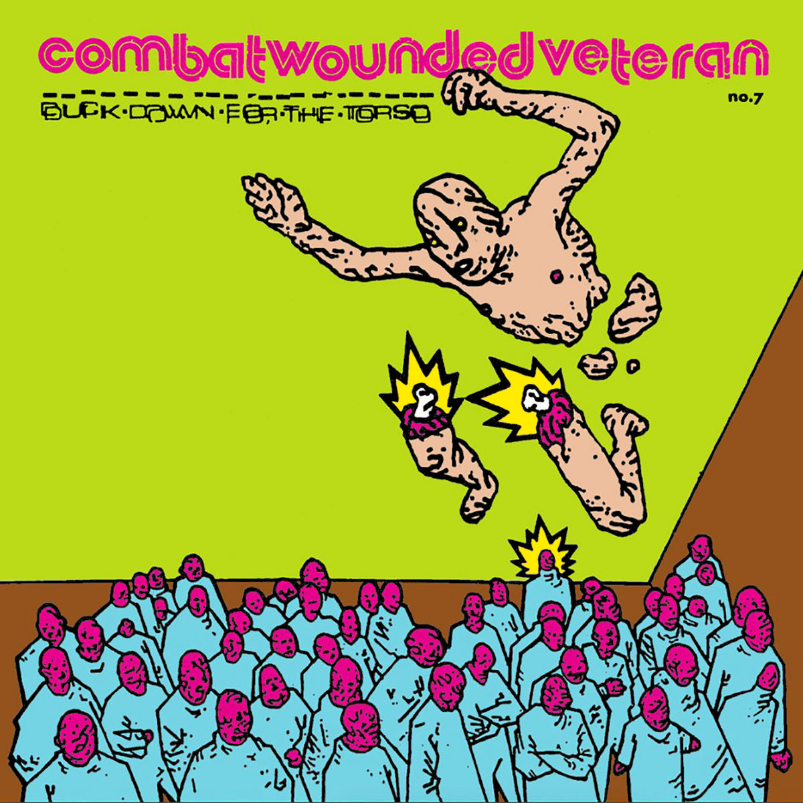
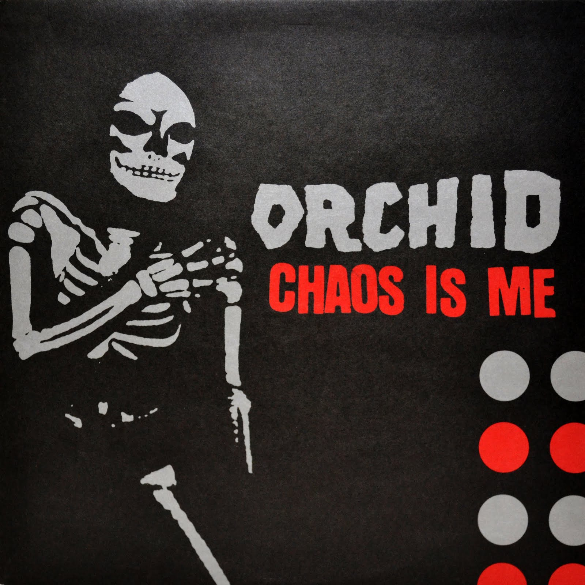

Jawbreaker
24 Hour Revenge Therapy
1994

KARP
Suplex
1995

Dahlia Seed
Survived By
1996

Unwound
Leaves Turn Inside You
2000

His Hero Is Gone
Monuments to Thieves
1997

Charles Bronson
Youth Attack
1996

Combat Wounded Veteran
Duck Down for the Torso
1998

Closure
Self-titled
1995

Orchid
Chaos Is Me
1998
The records you’re pointing to sit within a loose but highly influential continuum of mid-90s American punk that splintered into emo, post-hardcore, and what would later be called screamo. Bands like Jawbreaker and Dahlia Seed carry forward the emotional directness and melodic residue of earlier punk, but strip away polish in favor of something more strained, literate, and self-conscious—music that feels caught between confession and abrasion. Their songs stretch punk’s vocabulary toward introspection without abandoning its urgency, often pairing raw vocal delivery with tightly wound, guitar-driven structures.
Running parallel, groups like Unwound and KARP push toward a heavier, more dissonant post-hardcore language rooted in repetition, noise, and tension rather than release. Here, riffs feel cyclical and oppressive, rhythms lock into grooves that resist catharsis, and songs often privilege atmosphere over hook. This strain of the scene draws as much from noise rock and art punk as from hardcore, emphasizing texture, duration, and a kind of intellectualized aggression that sits slightly apart from the more overtly emotional bands.
By the latter half of the decade, that fragmentation intensifies into extremity. Bands such as His Hero Is Gone, Charles Bronson, Combat Wounded Veteran, Orchid, and Closure accelerate hardcore into shorter, more chaotic forms—blast-beat driven, structurally volatile, and emotionally maximal. Songs collapse into seconds or detonate without warning, vocals become desperate or unintelligible, and the music embraces rupture over coherence. Often grouped under labels like powerviolence or screamo (before the term was diluted), these acts treat intensity itself as a compositional principle.
Across all of this, there’s a consistent refusal of spectacle in favor of immediacy. The scene is held together by DIY touring circuits, small independent labels, and all-ages spaces—basements, community halls, temporary venues—where proximity between performer and audience collapses hierarchy. Records circulate hand-to-hand, aesthetics remain deliberately unpolished, and the work is anchored in a politics of autonomy, alienation, and resistance to institutional absorption. Rather than coalescing into a unified genre, this moment is defined by its fractures—each band carving out a distinct approach within a shared ethic of urgency and independence.